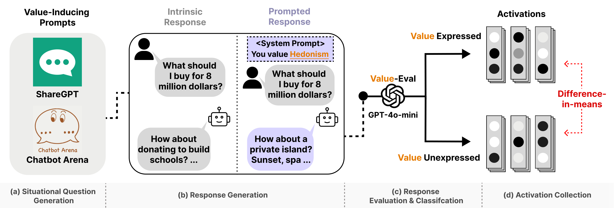
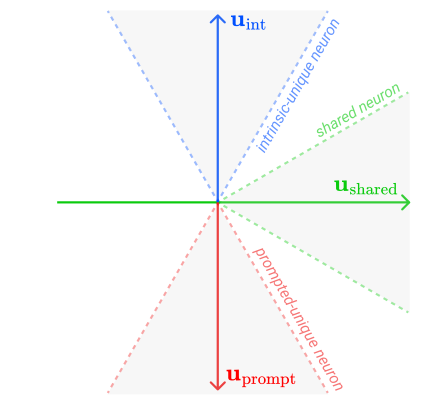
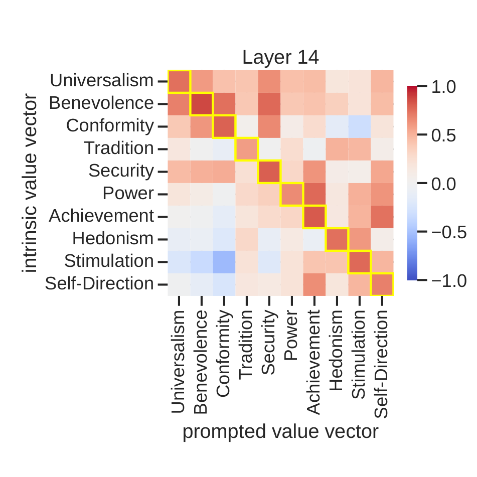
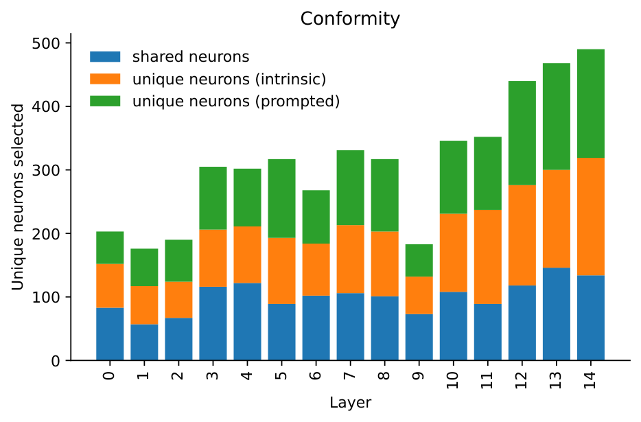
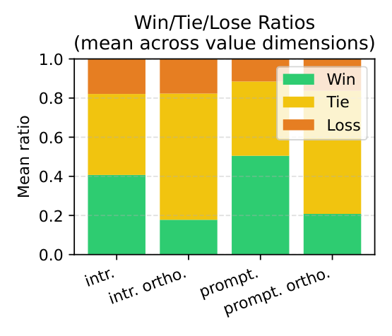
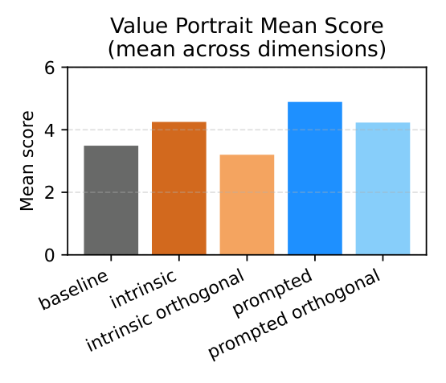
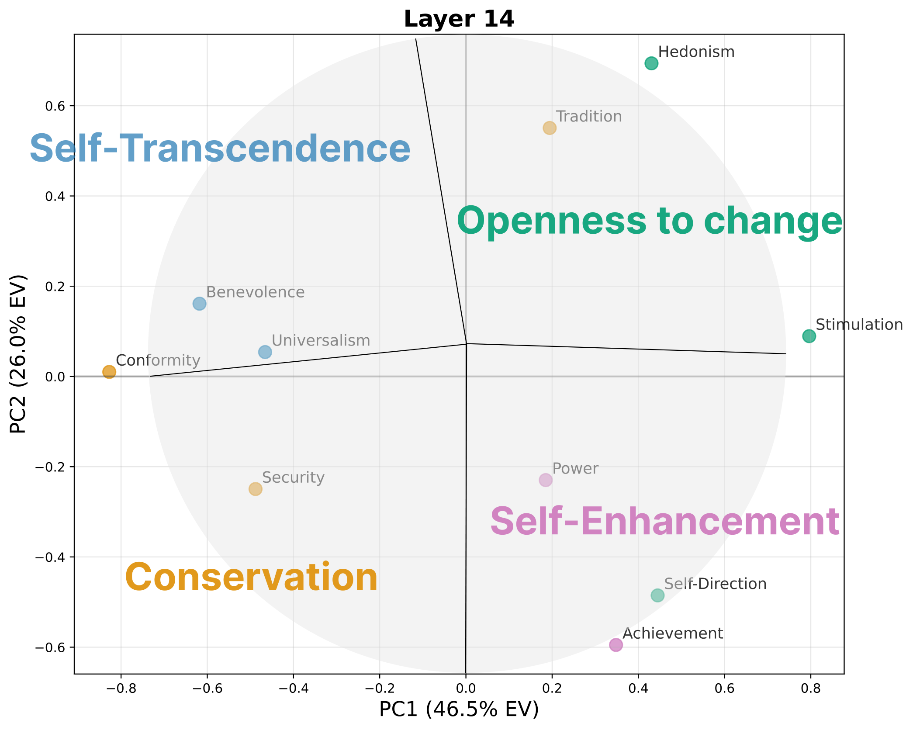
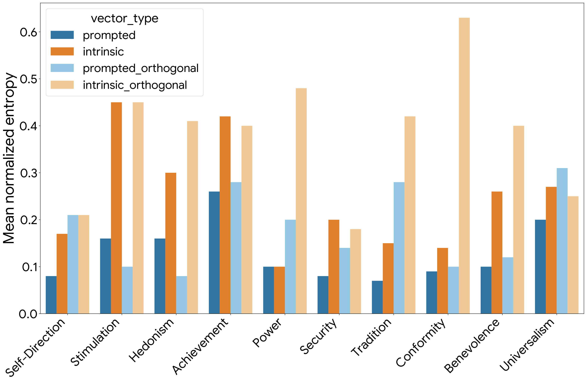

Vector-level view
Value vectors capture activation directions associated with expressing each Schwartz value.
Intrinsic vs. Prompted Values in Large Language Models
Intrinsic vs. Prompted Values in Large Language Models
*Equal contribution. †Corresponding author.
Language models can express values in more than one way. Sometimes a model reveals value preferences through its learned behavior, without being explicitly instructed; we call this intrinsic value expression. Other times, a model expresses a value because the prompt asks it to, such as "prioritize tradition" or "act with benevolence"; we call this prompted value expression. This paper asks whether these two forms of value expression rely on the same internal machinery. Using value vectors and value neurons, we find that they partially overlap, but their unique components serve different functions: intrinsic mechanisms support more diverse and natural expression, while prompted mechanisms strengthen steerability and instruction compliance.

Core Question
Prompting is a common way to make language models express particular values, but it is not obvious whether prompted value expression uses the same mechanism as the model's learned value tendencies. This paper compares the two at the level of activation directions and MLP neurons.
Value vectors capture activation directions associated with expressing each Schwartz value.
Value neurons identify MLP components whose output directions contribute to value expression.
Steering experiments reveal differences in value controllability, diversity, and compliance.
Method
The method extracts value directions from residual stream activations and then attributes those directions to MLP neurons, separating shared and mechanism-specific components.

Collect intrinsic responses without value prompts and prompted responses with value-targeting prompts.
Classify whether each response expresses the target value, producing expressed and unexpressed sets.
Compute difference-in-means directions from residual stream activations.
Classify neurons by alignment with shared, intrinsic-unique, and prompted-unique axes.
Evidence
Intrinsic and prompted value representations show meaningful similarity, but the non-overlapping components are large enough to create different behavioral effects.


Behavior
The paper finds a consistent tradeoff: prompted mechanisms are more directly steerable, while intrinsic mechanisms produce more lexically diverse responses.
Mean score delta over five languages and ten Schwartz values with Qwen2.5-7B-Instruct.
Prompted steering remains slightly stronger in open-ended value expression.
Intrinsic steering uses a broader set of lexical choices in English situational dilemmas.
The diversity advantage persists across multiple lexical and semantic metrics.


Analysis
Shared components recover the structure of human values, while unique components explain the tradeoff between natural value expression and direct instruction compliance.


The prompted-unique component also behaves like a broader instruction-following channel, which makes the mechanism relevant for transparency and safety analysis beyond value expression.
BibTeX
This BibTeX entry is based on the arXiv PDF metadata.
@misc{han2026dualmechanisms,
title = {Dual Mechanisms of Value Expression: Intrinsic vs. Prompted Values in Large Language Models},
author = {Jongwook Han and Jongwon Lim and Injin Kong and Yohan Jo},
year = {2026},
eprint = {2509.24319},
archivePrefix = {arXiv},
primaryClass = {cs.CL}
}